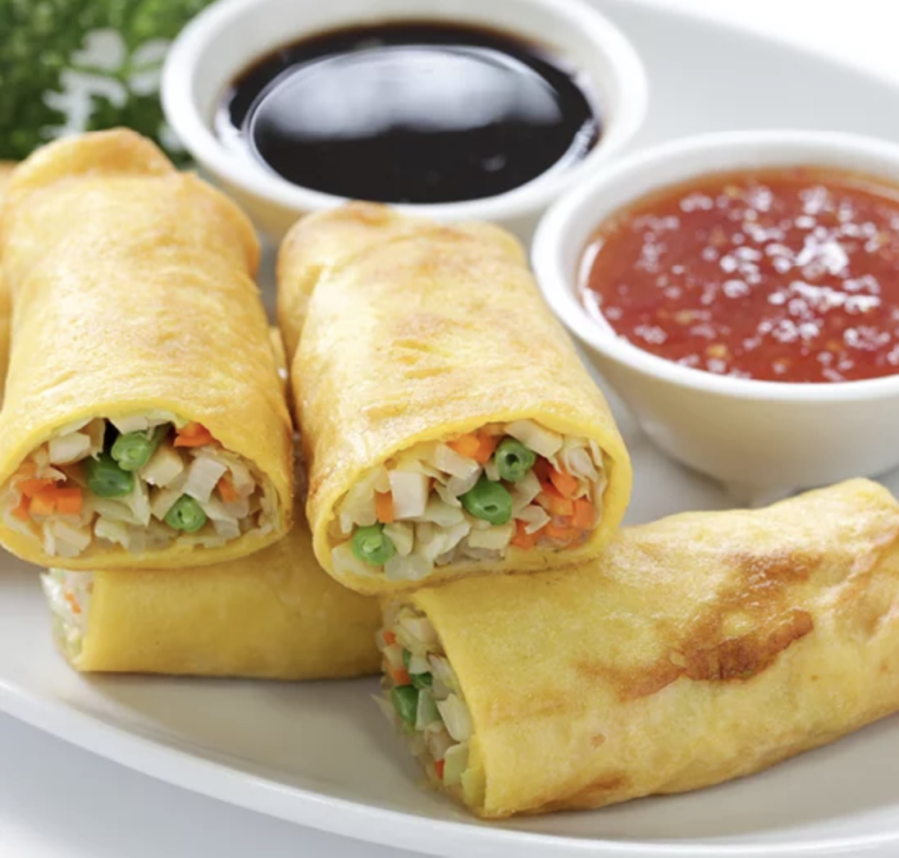

 Gorengan atau Goreng tepung adalah berbagai jenis makanan yang dicelup adonan tepung dan kemudian digoreng rendam dalam minyak goreng panas yang banyak. Di Indonesia gorengan adalah makanan ringan yang populer. Penjual gorengan dapat ditemukan di tepi jalan atau berkeliling dengan pikulan atau gerobak. Bahan-bahan yang dilapis adonan tepung dan digoreng antara lain; pisang goreng, tempe, tahu, oncom, ubi, singkong, cireng (Bahasa Sunda: Aci digoreng), yaitu tepung singkong digoreng, sukun, dan bakwan (di Jawa Barat disebut "bala-bala") yaitu adonan tepung yang dicampur cacahan kubis dan wortel. Salah satu jenis gorengan yang populer adalah Tahu Sumedang. Perkedel jagung dan perkedel kentang juga masuk dalam kategori gorengan. Gorengan biasanya dimakan dengan cabe rawit. Di Malaysia dan Brunei gorengan juga lazim ditemui, antara lain pisang dan ubi goreng.